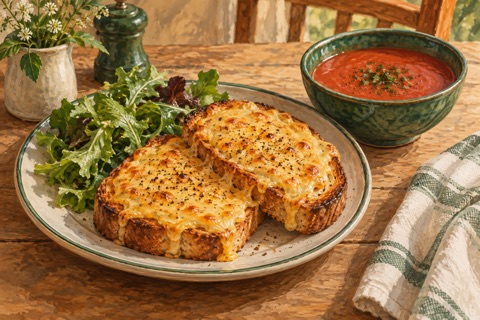

← Viikko 2 · Britannia
Lauantai / Päivällinen
Welsh rarebit ja tomaattikeitto
Sinappisia cheddarleipiä, pieni annos tomaattikeittoa ja vihersalaattia.

Ainekset
Määrät yhteensä 3 annokseen, myös lisukkeisiin ja mahdolliseen kasvisversioon. Vesi mainitaan valmistusohjeessa.
- Leipä300 g
- Cheddar180 g
- Maito80 ml
- Dijon-sinappi15 g
- Soijakastike5 ml
- Mallasetikka5 ml
- Voi20 g
- Vehnäjauho15 g
- Tomaattimurska400 g
- Sipuli100 g
- Kasvisliemi (valmiiksi laimennettu)300 ml valmista lientä
- Oliiviöljy15 ml
- Salaatinlehdet150 g
- Sitruuna0,5 kpl
- Mustapippuri¼ tl
- Suola¼ tl
Valmistus
- Hienonna sipuli ja kuullota 10 ml:ssa oliiviöljyä 6 minuuttia. Lisää tomaattimurska, liemi ja suola. Hauduta 15 minuuttia ja soseuta keitoksi.
- Sulata voi pienessä kattilassa. Lisää jauhot ja sekoita minuutti. Vatkaa maito vähitellen joukkoon paksuksi tahnaksi. Ota pois lämmöltä ja sekoita joukkoon juustoraaste, sinappi, soijakastike, mallasetikka ja mustapippuri.
- Paahda kuusi leipäviipaletta kevyesti molemmin puolin. Levitä juustoseos päälle ja kuorruta pellillä grillivastuksen alla 3–5 minuuttia, kunnes pinta kuplii ja ruskistuu. Tarkkaile leipiä koko ajan.
- Mausta salaatinlehdet lopulla 5 ml:lla oliiviöljyä ja sitruunamehulla. Tarjoa leipien ja pienten keittoannosten kanssa.
Huomio
Soijakastike ja mallasetikka korvaavat tässä Worcestershire-kastikkeen.
Kypsymisaika riippuu laitteista ja ainesten koosta. Kypsennysohjeet (englanniksi): tarkista ohjeessa mainittu sisälämpötila puhtaalla paistomittarilla.